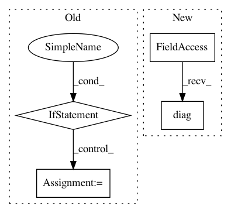

ef3c70b590645e8a8e2089ca8e7bf0310df103b5,gpytorch/models/abstract_variational_gp.py,AbstractVariationalGP,covar_diag,#AbstractVariationalGP#Any#,24
Before Change
// Get diagonal of covar
res = super(AbstractVariationalGP, self).__call__(inputs)
covar_diag = res.covariance_matrix
if isinstance(covar_diag, LazyTensor):
covar_diag = covar_diag.evaluate()
covar_diag = covar_diag.view(orig_size[:-1])
return covar_diag
After Change
// Get diagonal of covar
res = super(AbstractVariationalGP, self).__call__(inputs)
covar_diag = res.lazy_covariance_matrix.diag()
covar_diag = covar_diag.view(orig_size[:-1])
return covar_diag
In pattern: SUPERPATTERN
Frequency: 4
Non-data size: 4
Instances
Project Name: cornellius-gp/gpytorch
Commit Name: ef3c70b590645e8a8e2089ca8e7bf0310df103b5
Time: 2018-09-25
Author: gpleiss@gmail.com
File Name: gpytorch/models/abstract_variational_gp.py
Class Name: AbstractVariationalGP
Method Name: covar_diag
Project Name: GPflow/GPflow
Commit Name: bd1e9c04b48dd5ccca9619d5eaa2595a358bdb08
Time: 2020-01-31
Author: st--@users.noreply.github.com
File Name: gpflow/kernels/statics.py
Class Name: Constant
Method Name: K
Project Name: cornellius-gp/gpytorch
Commit Name: d4806006e851ba3acf9d11d17eac9e90d41f487e
Time: 2020-07-17
Author: balandat@fb.com
File Name: gpytorch/lazy/chol_lazy_tensor.py
Class Name: CholLazyTensor
Method Name: _chol_diag
Project Name: GPflow/GPflow
Commit Name: bd1e9c04b48dd5ccca9619d5eaa2595a358bdb08
Time: 2020-01-31
Author: st--@users.noreply.github.com
File Name: gpflow/kernels/linears.py
Class Name: Linear
Method Name: K_diag